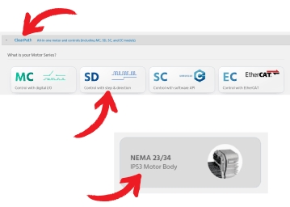

| Procedure ID | proc_load_a_saved_configuration_file_to_a_replacement_motor_v1 |
|---|---|
| Title | Load a Saved Configuration File to a Replacement Motor |
| Procedure Type | operation |
| Primary Role | L2_support |
| Support Safe | No |
| Validation Status | needs_sme_review |
| Merge Status | source_finalized |
Upload a previously saved .mtr configuration file to a new motor by connecting the replacement motor to power and a laptop running Teknic ClearPath, using File > Load Configuration, and disconnecting the cables when finished.
Use when a replacement motor needs to receive a previously saved configuration file before installation or testing.
Responsible role: L2_support
Instruction:
If the motor will be tested, make sure it is clamped down before proceeding.
Expected result:
The motor is secured against movement before any powered testing.
Screens / Images:
Stop or Escalate If:
Responsible role: L2_support
Instruction:
Connect the power supply cable (4-pin Molex) and the USB cable to the new motor and to the laptop containing the ClearPath software.
Expected result:
The replacement motor is connected to power and to the laptop running ClearPath.
Screens / Images:

Stop or Escalate If:
Responsible role: L2_support
Instruction:
Open the File menu in the ClearPath software and select Load Configuration to load the saved configuration file.
Expected result:
The saved .mtr configuration file is loaded to the replacement motor.
Screens / Images:
Stop or Escalate If:
Responsible role: L2_support
Instruction:
Disconnect the cables when the configuration upload is finished.
Expected result:
The power and USB cables are disconnected after the upload completes.
Stop or Escalate If: